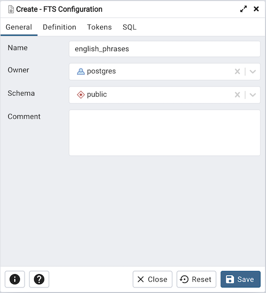
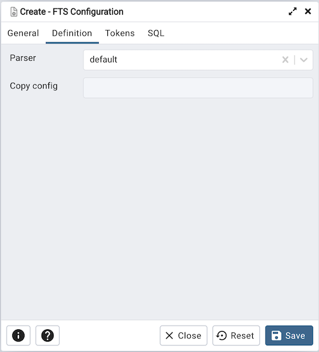
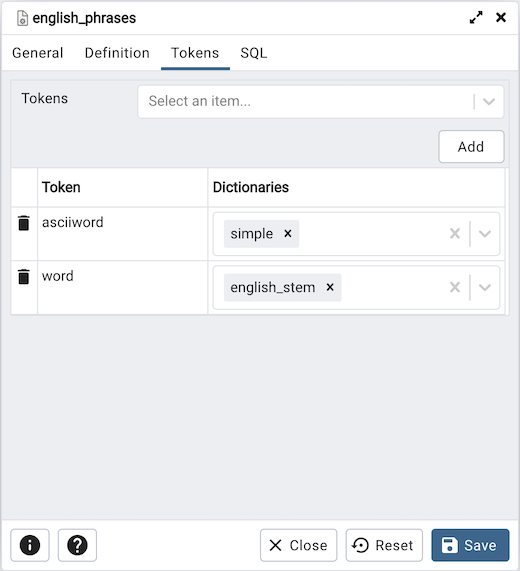
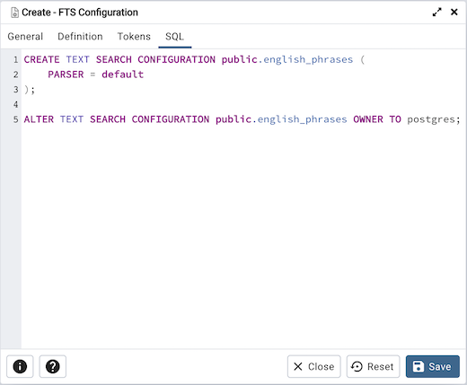

FTS Configuration Dialog¶
Use the FTS Configuration dialog to configure a full text search. A text search configuration specifies a text search parser that can divide a string into tokens, along with dictionaries that can identify searchable tokens.
The FTS Configuration dialog organizes the development of a FTS configuration through the following dialog tabs: “General, Definition, and Tokens. The SQL tab displays the SQL code generated by dialog selections.
Click the General tab to begin.
Use the fields in the General tab to identify a FTS configuration:
Use the Name field to add a descriptive name for the FTS configuration. The name will be displayed in the pgAdmin tree control.
Use the drop-down listbox next to Owner to specify the role that will own the configuration.
Select the name of the schema in which the FTS configuration will reside from the drop-down listbox in the Schema field.
Store notes about the FTS configuration in the Comment field.
Click the Definition tab to continue.
Use the fields in the Definition tab to define parameters:
Select the name of the text search parser from the drop-down listbox in the Parser field.
Select a language from the drop-down listbox in the Copy Config field.
Click the Tokens tab to continue.
Use the fields in the Tokens tab to add a token:
Use the Tokens field to specify the name of a token.
Click the Add button to create a token.
Use the Dictionaries field to specify a dictionary.
Repeat these steps to add additional tokens; to discard a token, click the trash icon to the left of the row and confirm deletion in the Delete Row popup.
Click the SQL tab to continue.
Your entries in the FTS Configuration dialog generate a SQL command (see an example below). Use the SQL tab for review; revisit or switch tabs to make any changes to the SQL command.
Example¶
The following is an example of the sql command generated by user selections in the FTS Configuration dialog:
The example shown demonstrates creating a FTS configuration named english_phrases. It uses the default parser.
Click the Info button (i) to access online help.
Click the Save button to save work.
Click the Close button to exit without saving work.
Click the Reset button to restore configuration parameters.